Analysis of CMIP6, ERA5, and CloudSat#
Table of Contents#
1. Introduction #
Questions
How is the cloud phase and snowfall
NOTE: .
2. Data Wrangling #
Organize my data#
Define a prefix for my project (you may need to adjust it for your own usage on your infrastructure).
input folder where all the data used as input to my Jupyter Notebook is stored (and eventually shared)
output folder where all the results to keep are stored
tool folder where all the tools
The ERA5 0.25deg data is located in the folder \scratch\franzihe\, CloudSat at …
import os
import pathlib
import sys
import socket
hostname = socket.gethostname()
abs_path = str(pathlib.Path(hostname).parent.absolute())
WORKDIR = abs_path[:- (len(abs_path.split('/')[-2] + abs_path.split('/')[-1])+1)]
if "mimi" in hostname:
print(hostname)
DATA_DIR = "/scratch/franzihe/"
# FIG_DIR = "/uio/kant/geo-geofag-u1/franzihe/Documents/Figures/ERA5/"
FIG_DIR = "/uio/kant/geo-geofag-u1/franzihe/Documents/Python/globalsnow/CloudSat_ERA5_CMIP6_analysis/Figures/CS_ERA5_CMIP6/"
elif "glefsekaldt" in hostname:
DATA_DIR = "/home/franzihe/Data/"
FIG_DIR = "/home/franzihe/Documents/Figures/ERA5/"
INPUT_DATA_DIR = os.path.join(DATA_DIR, 'input')
OUTPUT_DATA_DIR = os.path.join(DATA_DIR, 'output')
UTILS_DIR = os.path.join(WORKDIR, 'utils')
FIG_DIR_mci = os.path.join(FIG_DIR, 'McIlhattan/')
sys.path.append(UTILS_DIR)
# make figure directory
try:
os.mkdir(FIG_DIR)
except OSError:
pass
try:
os.mkdir(FIG_DIR_mci)
except OSError:
pass
mimi.uio.no
Import python packages#
Pythonenvironment requirements: file requirements_globalsnow.txtload
pythonpackages from imports.pyload
functionsfrom functions.py
# supress warnings
import warnings
warnings.filterwarnings('ignore') # don't output warnings
# import packages
from imports import(xr, ccrs, cy, plt, glob, cm, fct, np, pd, add_cyclic_point)
# from matplotlib.lines import Line2D
# from matplotlib.patches import Patch
# from sklearn.metrics import r2_score
xr.set_options(display_style='html')
<xarray.core.options.set_options at 0x7f7cf6317430>
# reload imports
%load_ext autoreload
%autoreload 2
Open variables#
Get the data requried for the analysis.
dat_in = os.path.join(OUTPUT_DATA_DIR, 'CS_ERA5_CMIP6')
# make output data directory
# try:
# os.mkdir(dat_out)
# except OSError:
# pass
# variable_id = ['tas', 'prsn', 'pr', 'lwp', 'clivi', 'areacella']
# Define list of models
list_models = ['cloudsat_250',
'cloudsat_500',
'era_30',
'era_250',
'era_500',
'cmip_250',
'cmip_500',
'MIROC6',
'CanESM5',
'AWI-ESM-1-1-LR',
'MPI-ESM1-2-LR',
'UKESM1-0-LL',
'HadGEM3-GC31-LL',
'CNRM-CM6-1',
'CNRM-ESM2-1',
'IPSL-CM6A-LR',
'IPSL-CM5A2-INCA'
]
# Create empty dictionaries to store the Xarray datasets for different variables:
variables = ['orig', '2t', 'lcc', 'lcc_2t', 'lcc_sf', 'lcc_2t_days', 'lcc_2t_sf', ]
ds = {var: {} for var in variables}
ds_mci = {var: {} for var in variables}
ds
{'orig': {},
'2t': {},
'lcc': {},
'lcc_2t': {},
'lcc_sf': {},
'lcc_2t_days': {},
'lcc_2t_sf': {}}
for model in list_models:
for var in variables:
file_pattern = f'{dat_in}/{var}/{model}_*{var}*.nc'
files = sorted(glob(file_pattern))
for file in files:
_ds = xr.open_mfdataset(file)
# [var][model]
ds[var][model] = xr.Dataset()
# ds_mci[var][model] = xr.Dataset()
# make the data cyclic going from -180 to 180
for var_id in _ds.keys():
data = _ds[var_id]
if 'lon' in _ds[var_id].dims and (data['lon'][0] != data['lon'][-1]*(-1)):
lon = _ds.coords['lon']
lon_idx = data.dims.index('lon')
wrap_data, wrap_lon = add_cyclic_point(data, coord=lon, axis=lon_idx)
if len(wrap_data.shape) == 2:
ds[var][model][var_id] = xr.DataArray(data = wrap_data, coords=dict(lat=data['lat'],
lon=np.append(data['lon'].values, data['lon'][0].values*(-1))))
if len(wrap_data.shape) == 3:
if 'time' in data.dims:
ds[var][model][var_id] = xr.DataArray(data = wrap_data, coords=dict(time=data['time'],
lat=data['lat'],
lon=np.append(data['lon'].values, data['lon'][0].values*(-1))))
elif 'model' in data.dims:
ds[var][model][var_id] = xr.DataArray(data = wrap_data, coords=dict(lat=data['lat'],
lon=np.append(data['lon'].values, data['lon'][0].values*(-1)),
model=data['model']),
)
if len(wrap_data.shape) == 4:
ds[var][model][var_id] = xr.DataArray(data = wrap_data, coords=dict(time=data['time'],
lat=data['lat'],
lon=np.append(data['lon'].values, data['lon'][0].values*(-1)),
model=data['model']))
else:
ds[var][model][var_id] = data
ds[var][model][var_id].attrs = data.attrs
# ds_mci[var][model] = xr.concat([ds[var][model].sel(lat=slice(-90,-66.91)),
# ds[var][model].sel(lat=slice(66.91,90))], dim ='lat')
# ds_mci[var][model] = ds[var][model].where(np.logical_and((ds[var][model].lat<=66.91),(ds[var][model].lat>=66.91)), other=np.nan )
# Access the datasets using ds[var][model]
# For example:
# lcc_2t_days_dataset = ds['lcc_2t_days']['era_30']
ds_mci = dict()
for var in ds.keys():
ds_mci[var] = dict()
for model in ds[var].keys():
ds_mci[var][model] = xr.concat([ds[var][model].sel(lat=slice(-90,-66.91)),
ds[var][model].sel(lat=slice(66.91,90))], dim ='lat')
np.arange(0,2)
array([0, 1])
def plt_var_spatial_month(da, da2):
f, axsm = plt.subplots(nrows=1, ncols=2, subplot_kw={'projection': ccrs.NorthPolarStereo(central_longitude=0.0, globe=None),}, #figsize=[3, 6],
sharex=True, sharey=True)
coast = cy.feature.NaturalEarthFeature(category='physical', scale='110m', facecolor='none', name='coastline')
cmap = cm.hawaii_r
axsm[0].text(-0.07, 0.55, model, va='bottom', ha='center', rotation='vertical', rotation_mode='anchor', transform=axsm[0].transAxes, fontweight='bold')
for ax, val, i in zip(axsm.flatten(),[da, da2], np.arange(0,2) ):
if i == 0:
levels = np.arange(0,0.225,0.025)
else:
levels = np.arange(0,1,0.1)
val.groupby('time.month').mean('time', skipna=True).sel(month=1, lat=slice(45,90)).plot(ax=ax, transform=ccrs.PlateCarree(), cmap=cmap, extend='max', levels=levels)
ax.set_extent([-180, 180, 90, 45], ccrs.PlateCarree())
ax.add_feature(coast, alpha=0.5)
gl = ax.gridlines(draw_labels=True)
gl.top_labels = False
gl.right_labels = False
plt.tight_layout()
# for model in ds['lcc_2t_days'].keys():
# if model == 'cmip_250' or model == 'cmip_500':
# print(model, 'lwp:', (ds['lcc_2t_days'][model]['lwp'].sel(lat=slice(45,90)).groupby('time.month').mean(('time', 'model'), skipna=True)).max().values.round(2),'prsn:', (ds['lcc_2t_days'][model]['prsn'].sel(lat=slice(45,90)).groupby('time.month').mean(('time', 'model'), skipna=True)).max().values.round(2))
# else:
# try:
# print(model, 'lwp:', (ds['lcc_2t_days'][model]['lwp'].sel(lat=slice(45,90)).groupby('time.month').mean('time', skipna=True)).max().values.round(2), 'prsn:', (ds['lcc_2t_days'][model]['prsn'].sel(lat=slice(45,90)).groupby('time.month').mean('time', skipna=True)).max().values.round(2) )
# except KeyError:
# continue
era_30 lwp: 0.83 prsn: 3.32
era_250 lwp: 0.42 prsn: 0.72
era_500 lwp: 0.31 prsn: 0.55
cmip_250 lwp: 4.66 prsn: 0.98
cmip_500 lwp: 5.68 prsn: 0.54
MIROC6 lwp: 1.91 prsn: 2.11
CanESM5 lwp: 0.73 prsn: 0.78
AWI-ESM-1-1-LR lwp: 0.49 prsn: 0.96
MPI-ESM1-2-LR lwp: 0.45 prsn: 0.76
UKESM1-0-LL lwp: 0.31 prsn: 1.07
HadGEM3-GC31-LL lwp: 0.32 prsn: 1.06
CNRM-CM6-1 lwp: 13.56 prsn: 1.06
CNRM-ESM2-1 lwp: 16.24 prsn: 0.99
IPSL-CM6A-LR lwp: 0.78 prsn: 1.03
IPSL-CM5A2-INCA lwp: 0.27 prsn: 0.95
# for model in ds['lcc_2t_days'].keys():
# # print(model)
# if model == 'cmip_250' or model== 'cmip_500':
# plt_var_spatial_month(ds['lcc_2t_days'][model]['lwp'].mean('model', skipna=True),
# ds['lcc_2t_days'][model]['prsn'].mean('model', skipna=True))
# else:
# try:
# plt_var_spatial_month(ds['lcc_2t_days'][model]['lwp'], ds['lcc_2t_days'][model]['prsn'])
# except KeyError:
# continue
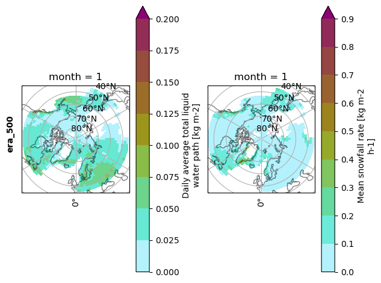
 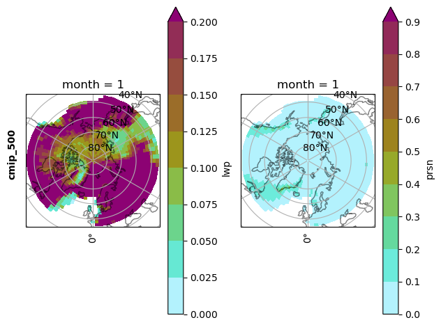
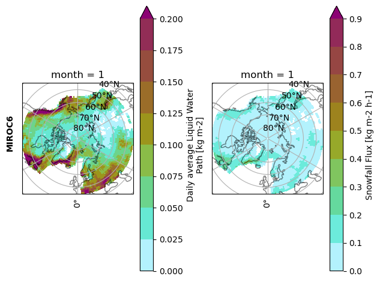
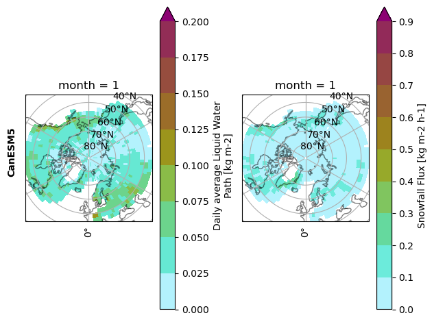
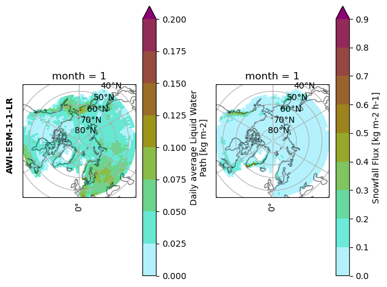
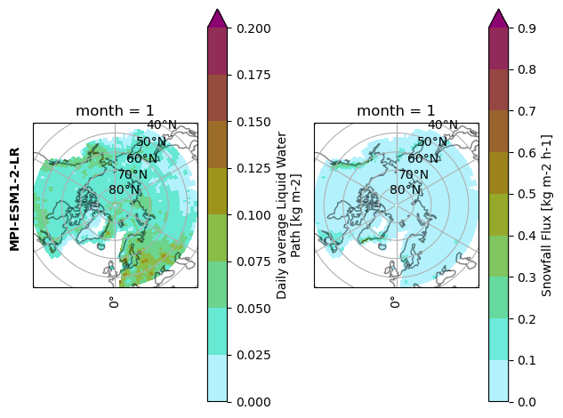
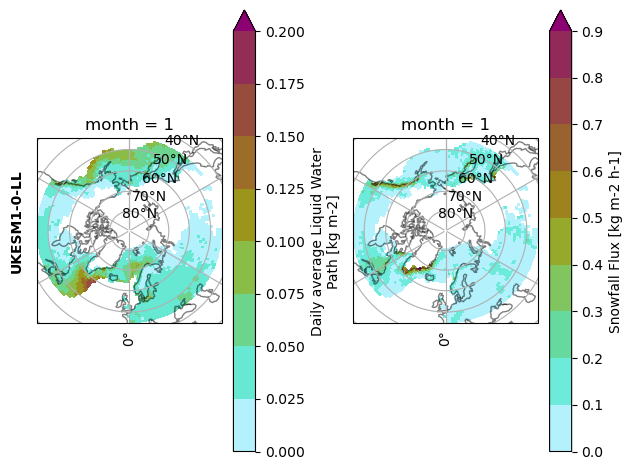
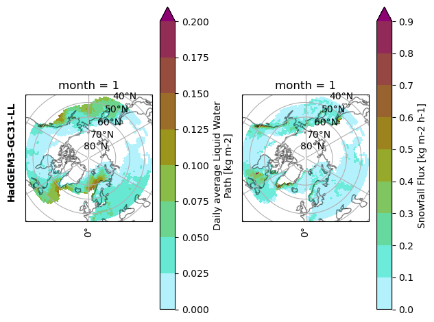
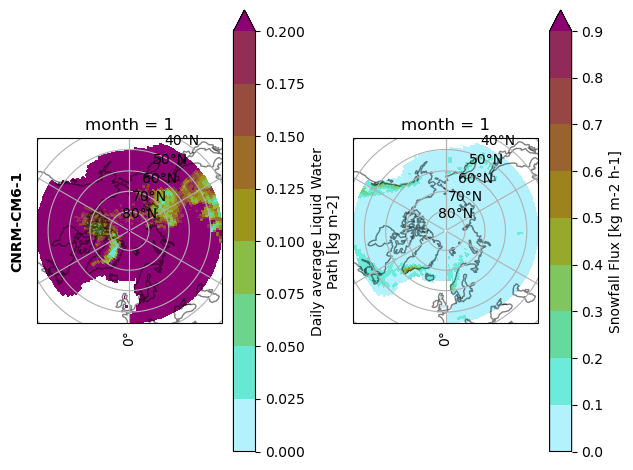
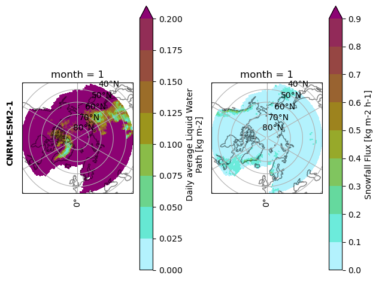
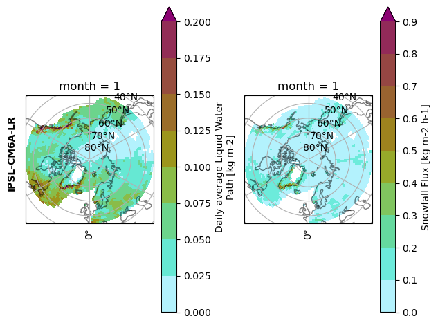
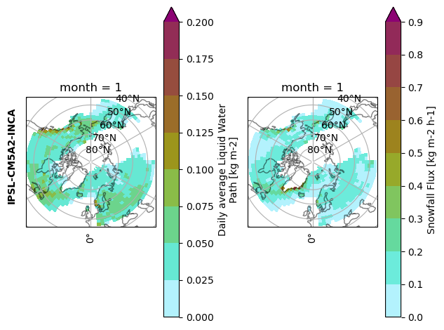
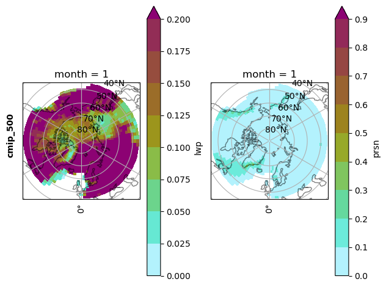
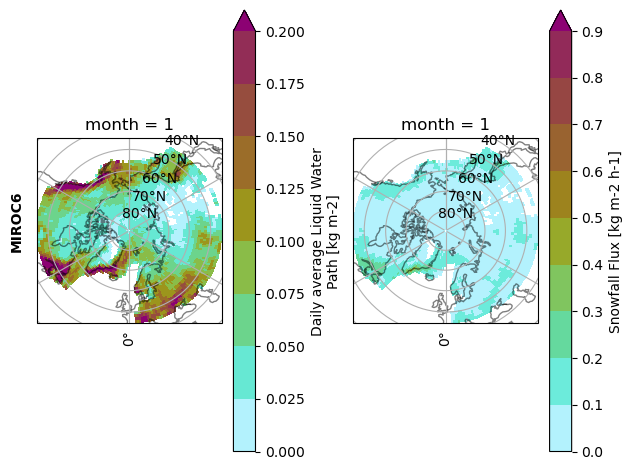
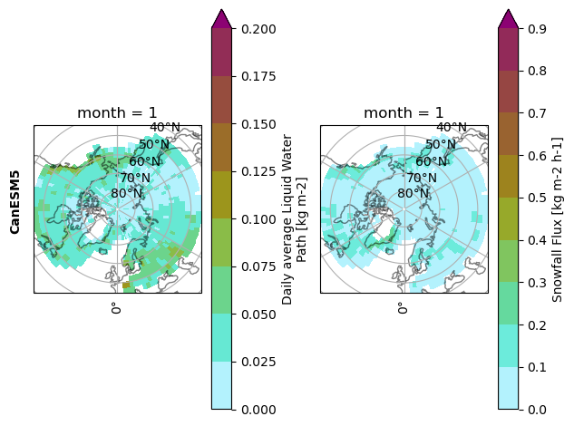
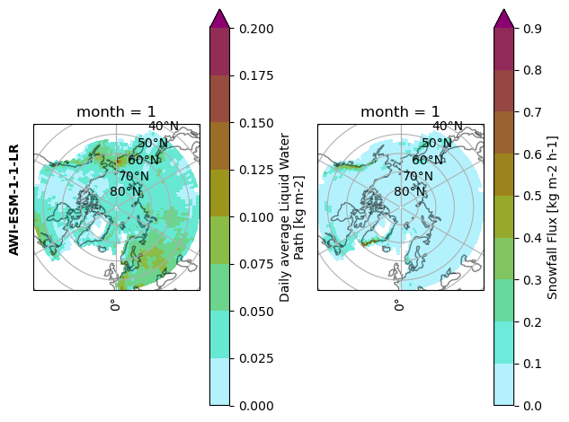
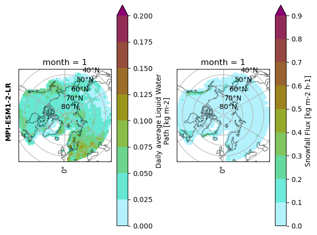
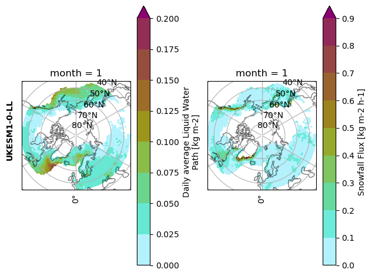
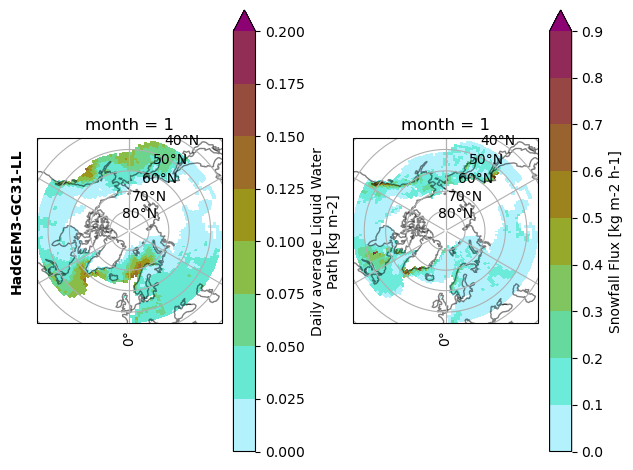
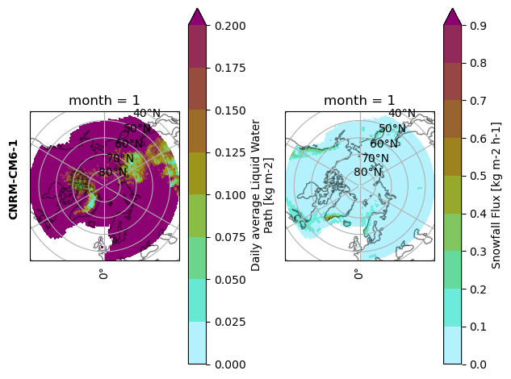
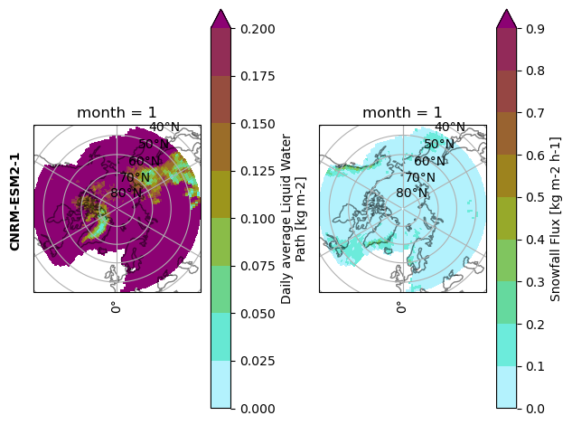
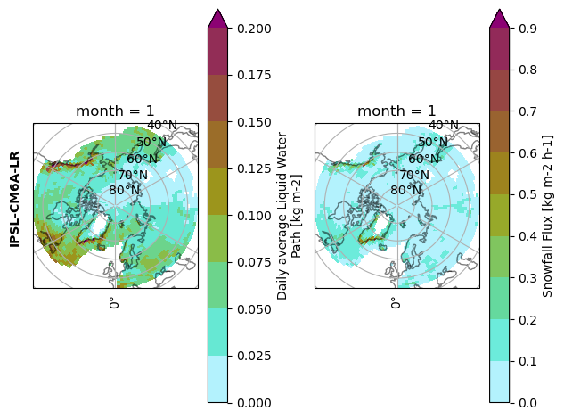
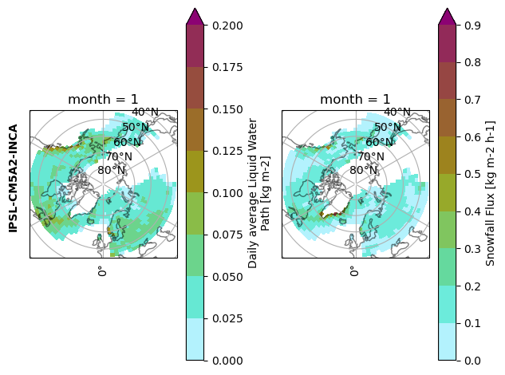
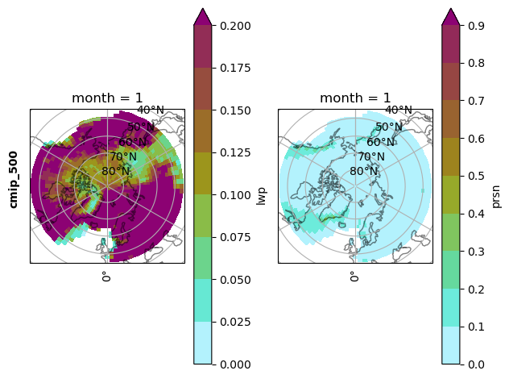
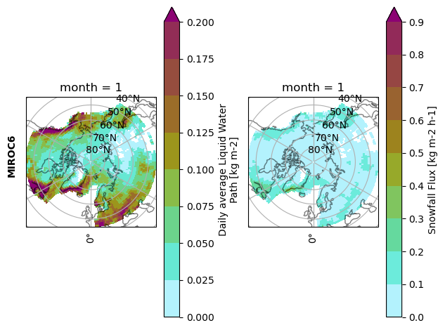
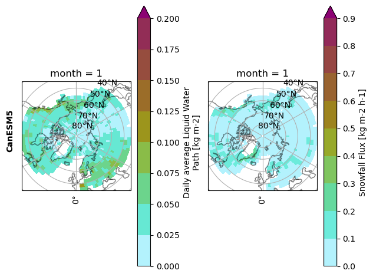
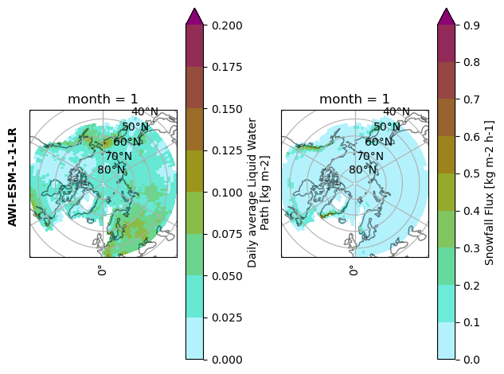
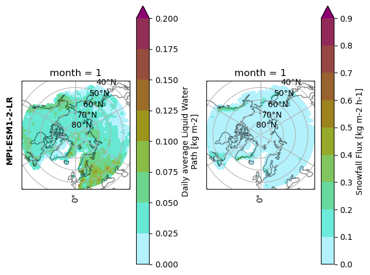
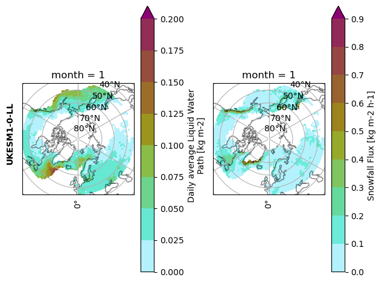
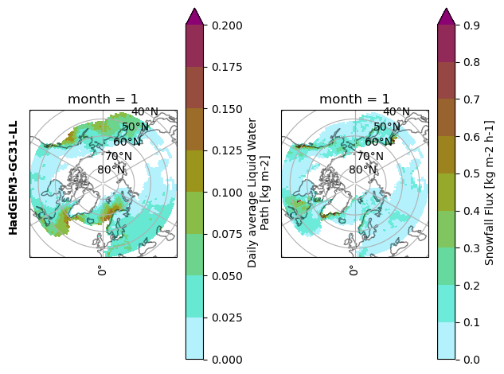
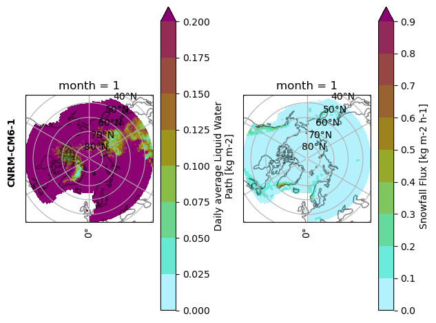
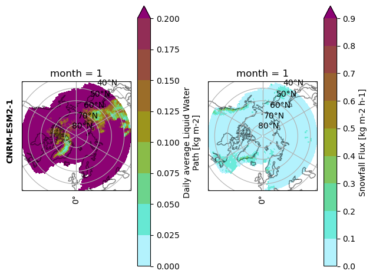
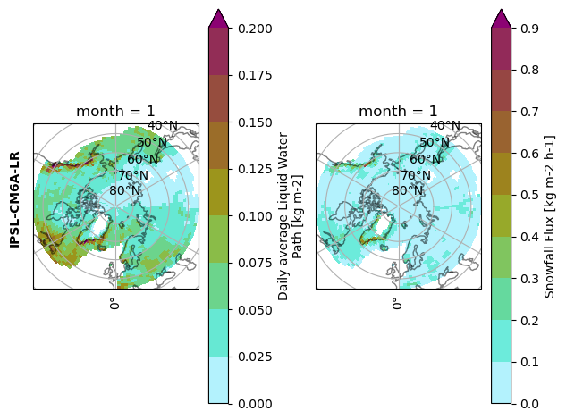
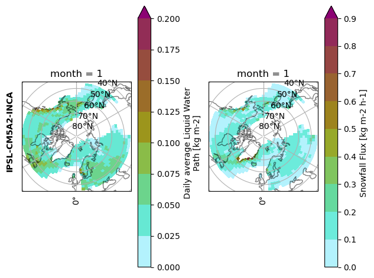
dict_label = {
# 'lcc_wo_snow': {'cb_label':'FsLCC (%)', 'levels':np.arange(0,110,10), 'vmin': 0, 'vmax':100, 'diff_levels':np.arange(-30,35,5), 'diff_vmin':-30, 'diff_vmax':30},
# 'lcc_w_snow': {'cb_label':'FoS in sLCCs (%)', 'levels':np.arange(0,110,10), 'vmin': 0, 'vmax':100, 'diff_levels':np.arange(-60,65,5), 'diff_vmin':-60, 'diff_vmax':60},
# 'sf_eff': {'cb_label':'SE in sLCCs (h$^{-1}$)', 'levels':np.arange(0,5.5,.5), 'vmin':0, 'vmax':5, 'diff_levels':np.arange(-1.2,1.4,.2), 'diff_vmin':-1.2, 'diff_vmax':1.2}#'Relative snowfall efficiency (h$^{-1}$)'
'FLCC' : {'cb_label':'FLCC (%)', 'levels':np.arange(0,105.,5.), 'vmin':0, 'vmax': 100., 'diff_levels':np.arange(-100,110,10), 'diff_vmin':-100, 'diff_vmax':100},
'FsLCC': {'cb_label':'FsLCC (%)', 'levels':np.arange(0,105.,5.), 'vmin':0, 'vmax': 100, 'diff_levels':np.arange(-100,110,10), 'diff_vmin':-100, 'diff_vmax':100},
# 'FoP' : {'cb_label':'FoP in LCCs (%)', 'levels':np.arange(0,105.,5.), 'vmin':0, 'vmax': 100, 'diff_levels':np.arange(-100,110,10), 'diff_vmin':-100, 'diff_vmax':100},
'FoS' : {'cb_label':'FoS in sLCCs (%)', 'levels':np.arange(0,105.,5.), 'vmin':0, 'vmax': 100, 'diff_levels':np.arange(-100,110,10), 'diff_vmin':-100, 'diff_vmax':100},
'sf_eff': {'cb_label':'SE in sLCCs (h$^{-1}$)','levels':np.arange(0,5.5,.5), 'vmin':0, 'vmax': 5, 'diff_levels':np.arange(-1.2,1.4,.2), 'diff_vmin':-1.2, 'diff_vmax':1.2},
# 'pr_eff': {'cb_label':'PE in sLCCs (h$^{-1}$)', 'levels':np.arange(0,550.,50.), 'vmin':0, 'vmax':500, 'diff_levels':np.arange(-120,140,20), 'diff_vmin':-120, 'diff_vmax':120},
'FLCC-FsLCC': {'cb_label':'FLCC-FsLCC (%)', 'levels':np.arange(0,105.,5.), 'vmin':0, 'vmax': 100, 'diff_levels':np.arange(-100,110,10), 'diff_vmin':-100, 'diff_vmax':100}}
ratios = fct.get_ratios_dict(list_models, ds,seasons='normal')
ratios_mci = fct.get_ratios_dict(list_models, ds_mci,seasons=None)
for var_name in dict_label.keys():
ratios = fct.get_only_valid_values(ratios, '250', var_name)
ratios = fct.get_only_valid_values(ratios, '500', var_name)
ratios_mci = fct.get_only_valid_values(ratios_mci, '250', var_name)
ratios_mci = fct.get_only_valid_values(ratios_mci, '500', var_name)
# # Calculate weighted averages
for model in ratios.keys():
weights = ds['orig'][model]['areacella']
for vars in ratios[model].keys():
ratios[model][vars+'_mean'], ratios[model][vars+'_std'], ratios[model][vars+'_stats'] = fct.weighted_average(ratios[model][vars], weights)
ratios_mci[model][vars+'_mean'], ratios_mci[model][vars+'_std'], ratios_mci[model][vars+'_stats'] = fct.weighted_average(ratios_mci[model][vars], weights)
for var_name in dict_label.keys():
if var_name == 'FLCC-FsLCC':
continue
else:
fct.plt_spatial_season_var(ratios, var_name, dict_label, FIG_DIR, 45)
fct.plt_spatial_season_var(ratios_mci, var_name, dict_label, FIG_DIR_mci, 66)
# plot monthly model variation
fct.plt_monthly_model_variation(ratios, var_name, dict_label[var_name],FIG_DIR)
fct.plt_monthly_model_variation(ratios_mci, var_name, dict_label[var_name],FIG_DIR_mci)
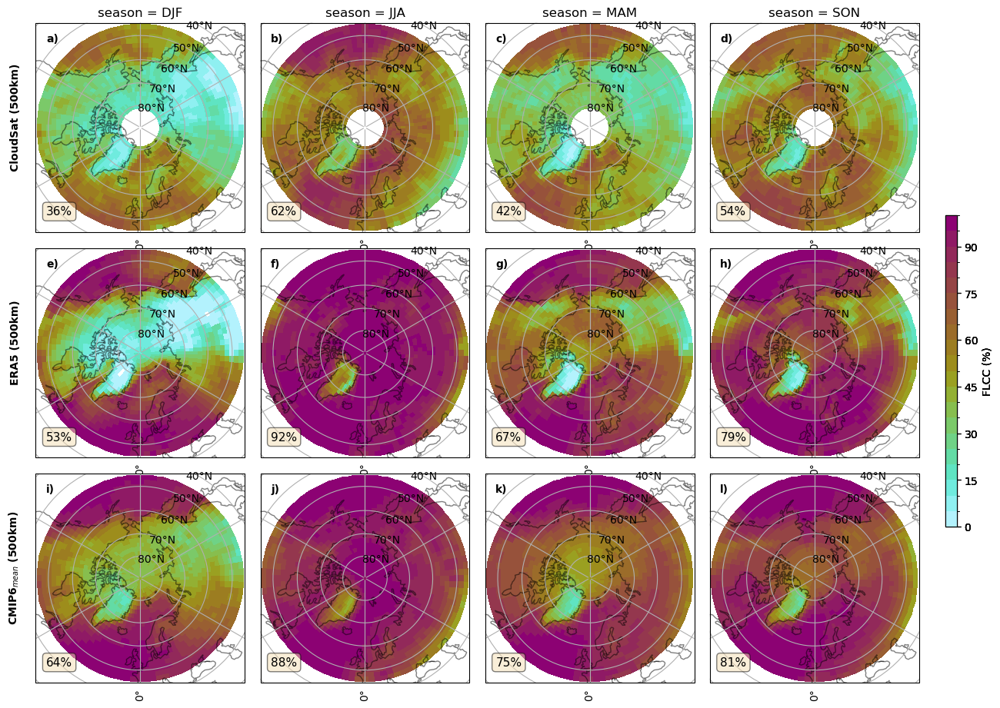
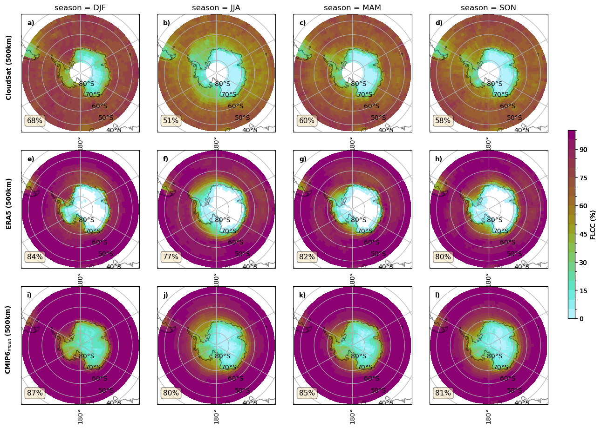
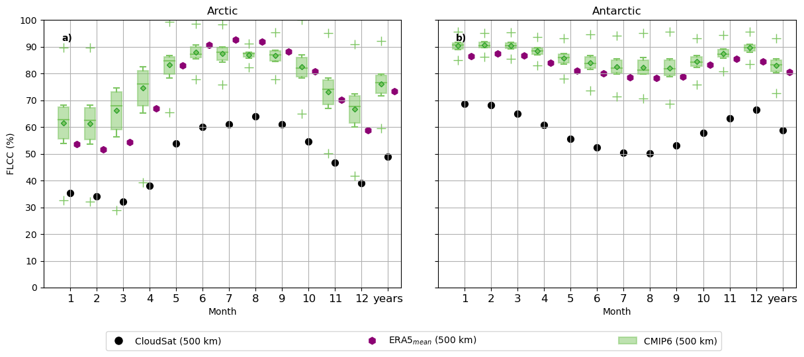
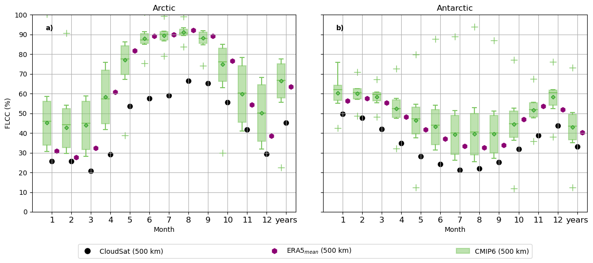
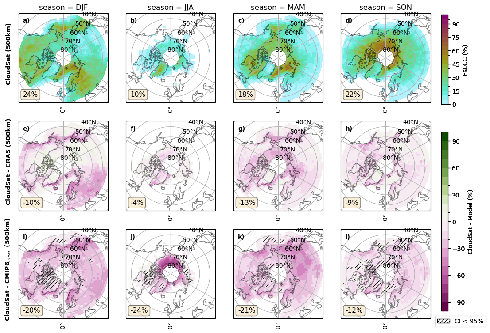
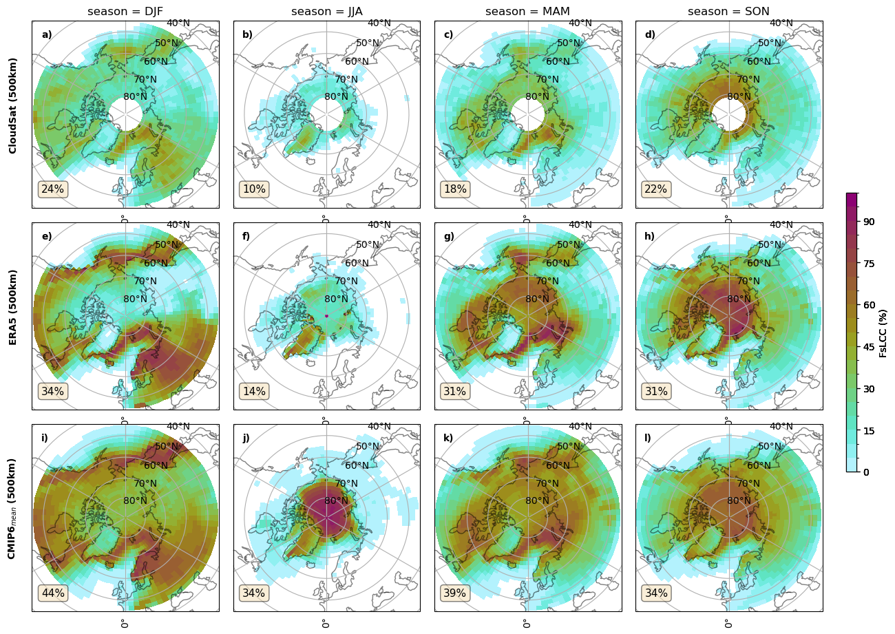
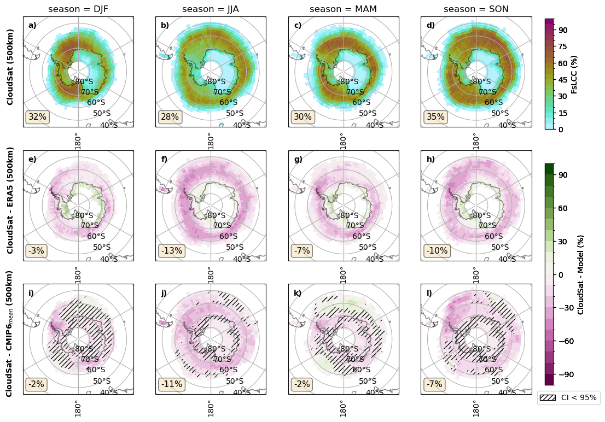
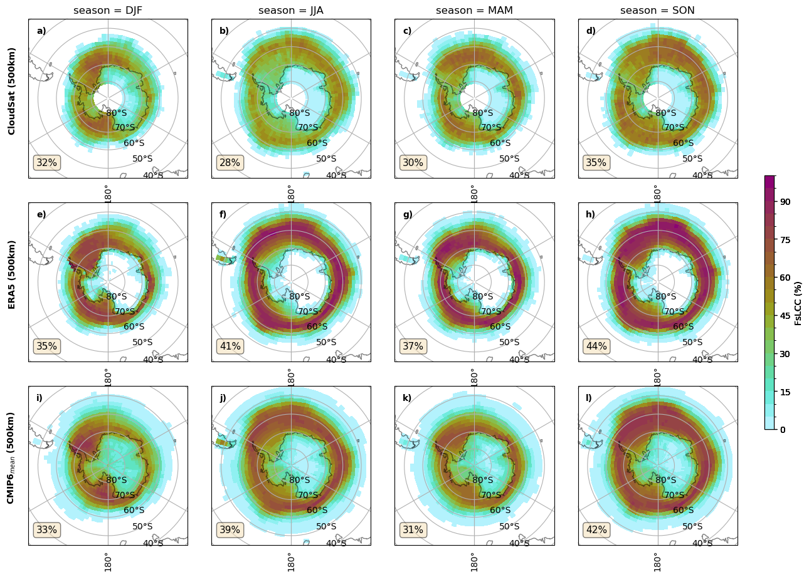
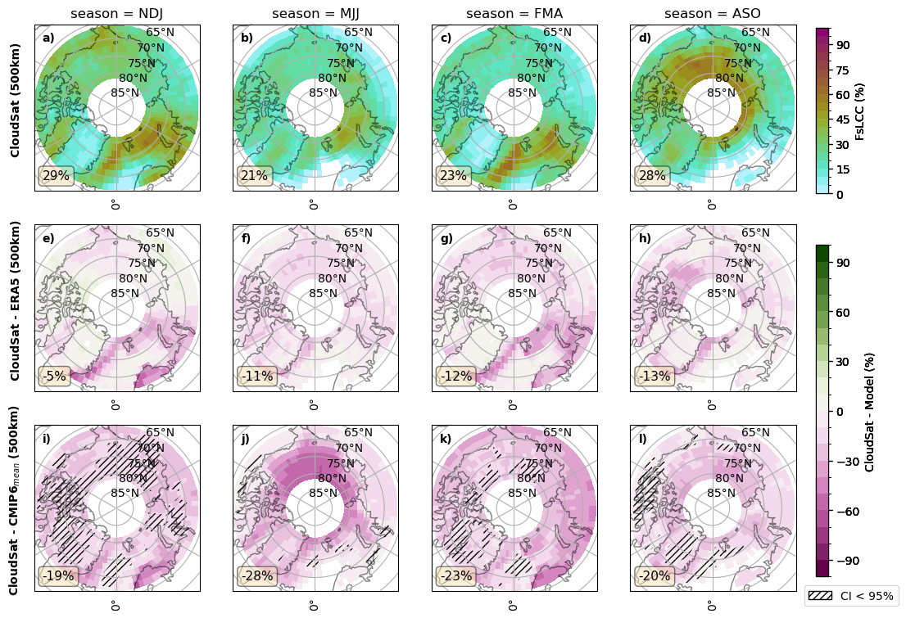
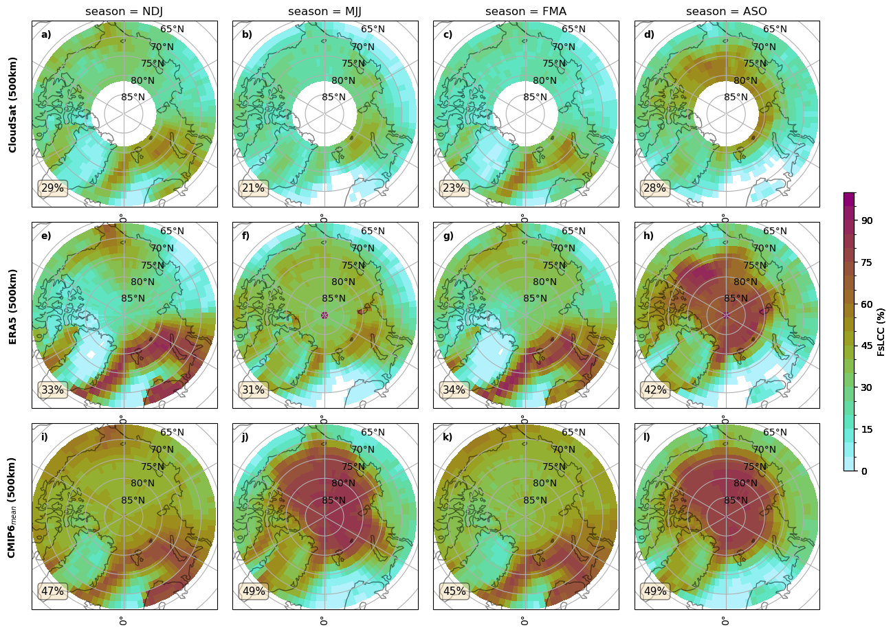
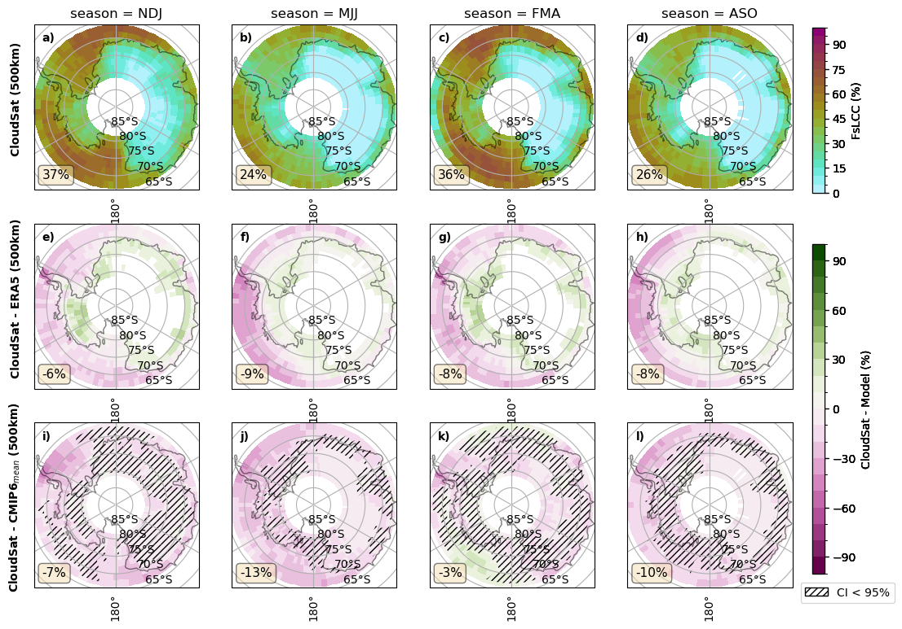
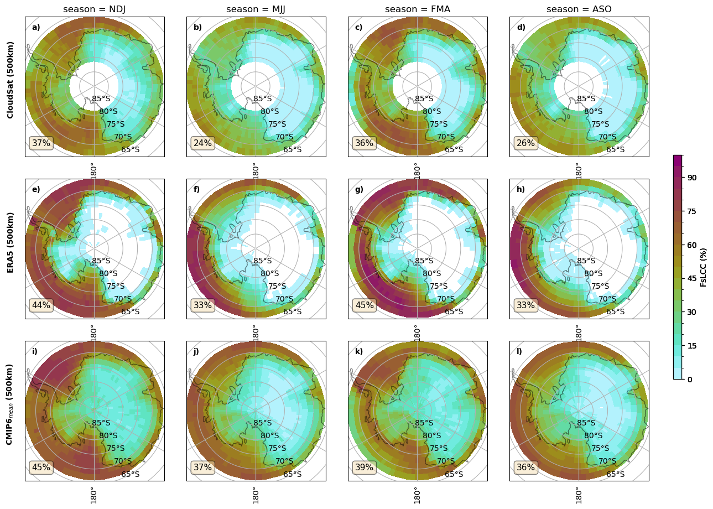
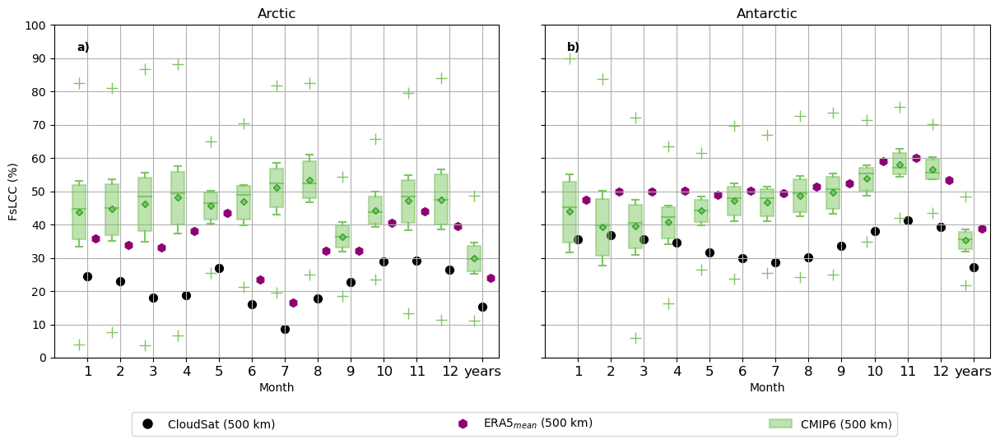
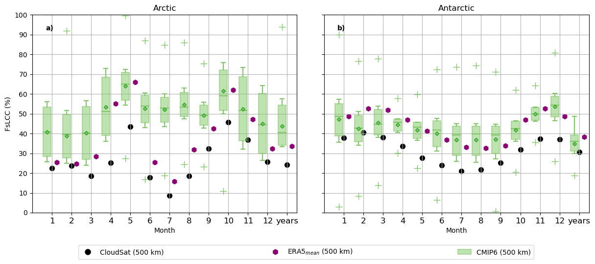
 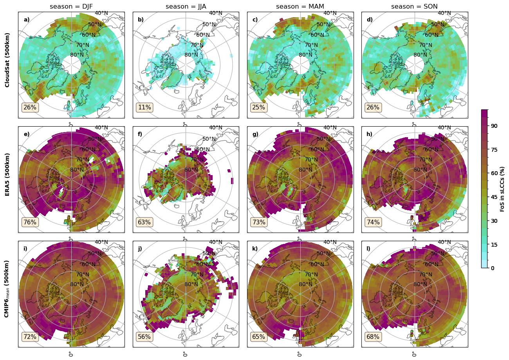
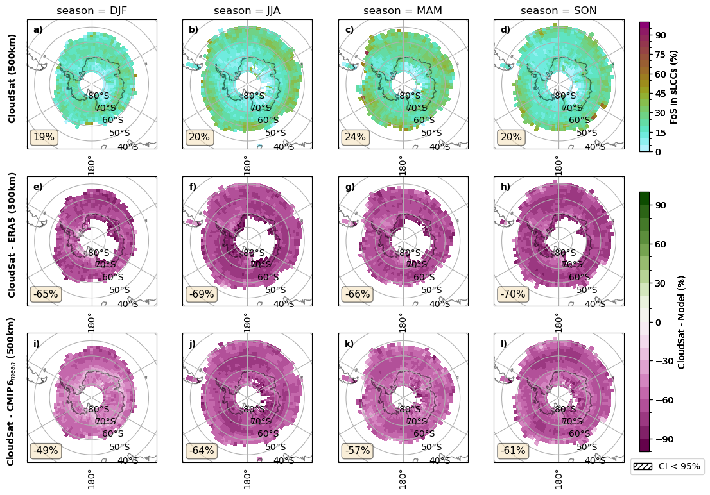


fct.plt_spatial_season_FLCC_FsLCC(ratios['cloudsat_500'], dict_label, FIG_DIR, 45)
fct.plt_spatial_season_FLCC_FsLCC(ratios_mci['cloudsat_500'], dict_label, FIG_DIR_mci, 66)

 


ratios['250'] = xr.concat([ratios['era_250'].assign_coords(coords={'model':'ERA5'}), ratios['cmip_250']], dim=("model"))
ratios['500'] = xr.concat([ratios['era_500'].assign_coords(coords={'model':'ERA5'}), ratios['cmip_500']], dim=("model"))
ratios_mci['250'] = xr.concat([ratios_mci['era_250'].assign_coords(coords={'model':'ERA5'}), ratios_mci['cmip_250']], dim=("model"))
ratios_mci['500'] = xr.concat([ratios_mci['era_500'].assign_coords(coords={'model':'ERA5'}), ratios_mci['cmip_500']], dim=("model"))
df_NH = dict()
df_SH = dict()
df = dict()
for var_name in dict_label.keys():
_, R2_var_NH, d_var_NH, _, R2_var_SH, d_var_SH = fct.calc_scatter_obs_model(ratios, var_name)
df_NH[var_name] = (pd.DataFrame({model: np.array(list(R2_var_NH[model].values())) for model in R2_var_NH.keys()}, index=ratios[model].season.values)).transpose()
df_SH[var_name] = (pd.DataFrame({model: np.array(list(R2_var_SH[model].values())) for model in R2_var_SH.keys()}, index=ratios[model].season.values)).transpose()
df_NH_mci = dict()
df_SH_mci = dict()
df_mci = dict()
for var_name in dict_label.keys():
_, R2_var_NH_mci, d_var_NH_mci, _, R2_var_SH_mci, d_var_SH_mci = fct.calc_scatter_obs_model(ratios_mci, var_name)
df_NH_mci[var_name] = (pd.DataFrame({model: np.array(list(R2_var_NH_mci[model].values())) for model in R2_var_NH_mci.keys()}, index=ratios_mci[model].season.values)).transpose()
df_SH_mci[var_name] = (pd.DataFrame({model: np.array(list(R2_var_SH_mci[model].values())) for model in R2_var_SH_mci.keys()}, index=ratios_mci[model].season.values)).transpose()
# set ERA5 correlation number to nan
for season in df_NH['sf_eff'].columns:
df_NH['sf_eff'][season].loc['ERA5'] = np.nan
df_SH['sf_eff'][season].loc['ERA5'] = np.nan
# df_NH['pr_eff'][season].loc['ERA5'] = np.nan
# df_SH['pr_eff'][season].loc['ERA5'] = np.nan
for season in df_NH_mci['sf_eff'].columns:
df_NH_mci['sf_eff'][season].loc['ERA5'] = np.nan
df_SH_mci['sf_eff'][season].loc['ERA5'] = np.nan
# df_NH_mci['pr_eff'][season].loc['ERA5'] = np.nan
# df_SH_mci['pr_eff'][season].loc['ERA5'] = np.nan
fct.plt_R2_heatmap_season(df_NH, df_SH, dict_label,FIG_DIR)
fct.plt_R2_heatmap_season(df_NH_mci, df_SH_mci, dict_label,FIG_DIR_mci)


# for var_name in dict_label.keys():
# fct.plt_spatial_season_all_models(ratios, var_name,dict_label,FIG_DIR, 45)
# fct.plt_spatial_season_all_models(ratios_mci, var_name, dict_label,FIG_DIR_mci, 66)


for var_name in dict_label.keys():
fct.plt_scatter_obs_model(ratios, var_name, dict_label[var_name], FIG_DIR)
fct.plt_scatter_obs_model(ratios_mci, var_name, dict_label[var_name], FIG_DIR_mci)